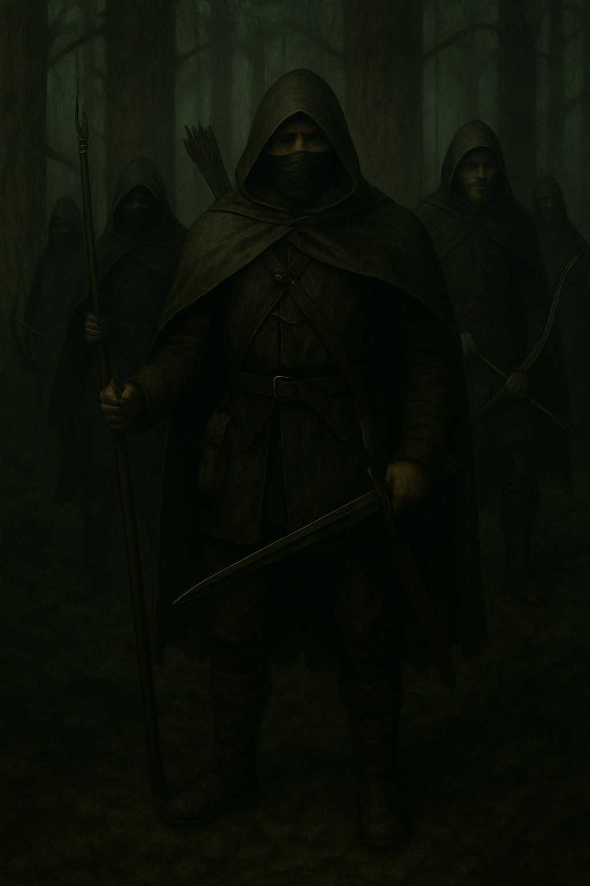

1. La Tenue du Rôdeur

"Nous sommes les feuilles dans le vent, les arbres qui marchent, les Gardiens silencieux des terres du Gondor."
Description : Tunique et pantalon dans des teintes de vert mousse, brun terre et gris-feuille, conçus pour se fondre dans les Forêts d’Ithilien, les sous-bois et les ruines anciennes.
Equipement : Arc long de frêne ou d’if, carquois dorsal, dague courte et épée à une main. Cape ample, capuche et bottes renforcées pour les marches longues.
Usage : Patrouille, embuscade, protection de sites, reconnaissance.
Philosophie : cette tenue représente l’équilibre entre l’Homme et la Nature, la vigilance constante et la fidélité au Gondor.
2. La Tenue des Sables (spécifique à la 9ème Compagnie)

"Nous sommes la Peur qui rôde avant l’aube. Nous sommes l’Ombre de terreur dans la nuit."
Description : tunique légère et ample, de teinte sable, ocre ou brun clair, conçue pour les régions désertiques et rocailleuses du Sud du Gondor et au-delà. Tissu respirant, coupe fluide et ample pour supporter la chaleur.
Equipement : Aucun superflu. Gourdes d’eau, lames et lances courtes, arc court à double courbure. Peu de vivres : "Nous nous nourrissons sur l’ennemi."
Usage : Missions d’infiltration, de sabotage et de frappe préventive en territoire Haradrim.
Philosophie : légèreté, efficacité, discrétion. Ceux qui portent cette tenue sont les plus endurcis, les prédateurs du Désert.
3. La Tenue d’apparat (spécifique à la 9ème Compagnie)

"Nous avons versé le sang pour la Paix et pour la Gloire du Gondor. Le Roi lui-même nous a vu."
Description : tenue rouge sombre (cape, pantalon, tunique), bottes et gants marron ou noirs selon les préférences du Rôdeur, masque de visage noir. Autour de la taille, un cordon de laine tressée noir, symbole du Lien et du Serment éternel aux Frères de la 9éme Compagnie.
Equipement : arme cérémonielle, sabre Haradrim, épée à deux mains ou à une main lame courte.
Usage : cérémonies, présentation au Roi Elessar, missions de représentation du Gondor.
Origine : Cette tenue fut offerte par le Roi Elessar en personne, en remerciement pour les actions décisives de la 9ème Compagnie lors de la Guerre Rouge contre les forces Suderonnes.
Symbolique :
Rouge : Le sang versé, les embuscades sanglantes, les frères tombés et les Frères Haradrim qui ont rejoint la 9ème.
Noir : couleur emblématique du Gondor, mais aussi de la discrétion des Rôdeurs, le deuil des Fréres tombés.
Cordon noir : Le Serment silencieux du Rôdeur. Lié à ses Frères de la 9ème jusqu’à la fin de ses jours.
Le masque de visage noir : rappel les coutumes Haradrim mais aussi l’opprobre jetée sur la 9ème suite à sa guerre irrégulière : symboliquement le Rodeur cache ainsi son visage dans le noir.